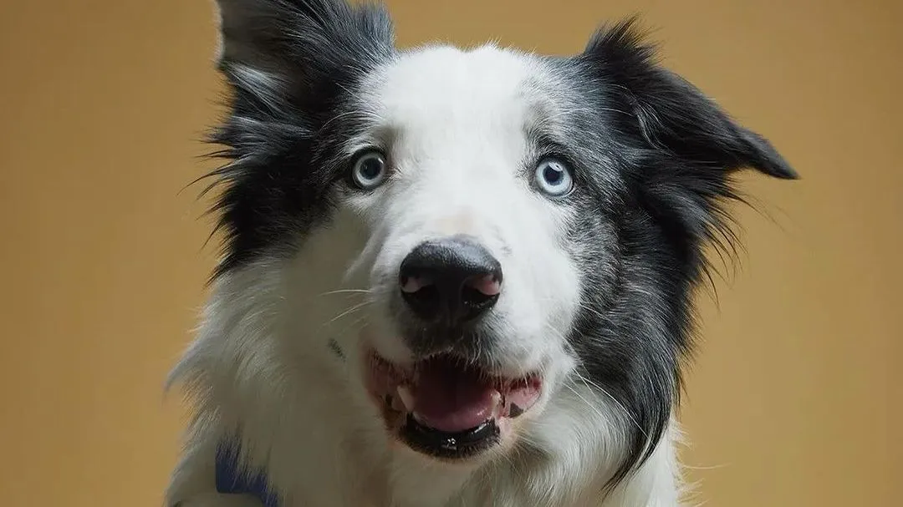

Cão de Guarda
Conheça as características e cuidados necessários para ter um cão de guarda em sua casa.
Aqui você encontra informações sobre castração, vacinação e adoção de pets. Nosso objetivo é ajudar você a cuidar melhor do seu amigo!
Conheça as características e cuidados necessários para ter um cão de guarda em sua casa.
É um ótimo companheiro – protetor, leal e muito brincalhão. Certamente será um grande amigo para o seu tutor e sua família!
Saiba mais sobre a raça Cane Corso, um cão forte e leal, ideal para a proteção da família.

Descubra o gigante gentil do mundo felino, o gato Maine Coon, e suas necessidades especiais.
Explore as características do gato siamês, conhecido por sua inteligência e sociabilidade.
Conheça o gato Bengal, uma raça exótica com aparência selvagem e comportamento afetuoso.